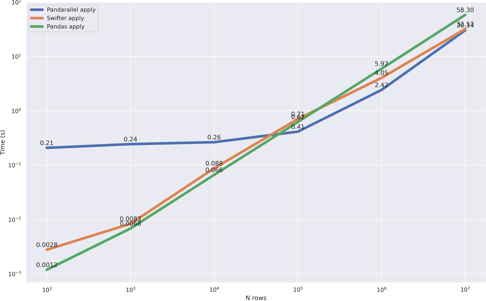
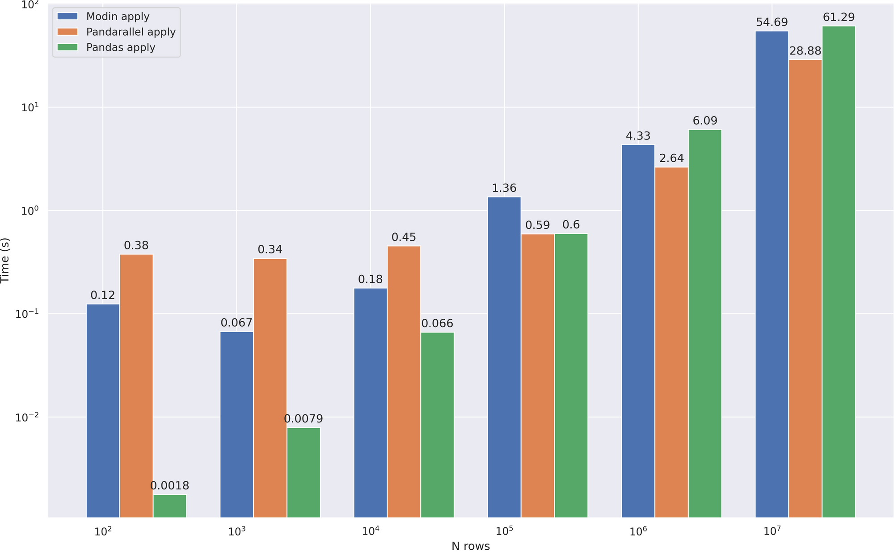
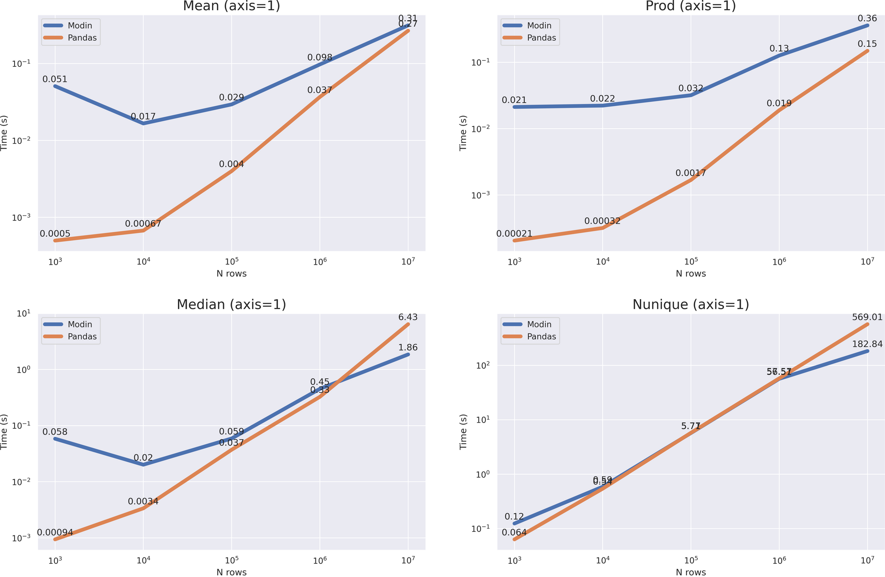
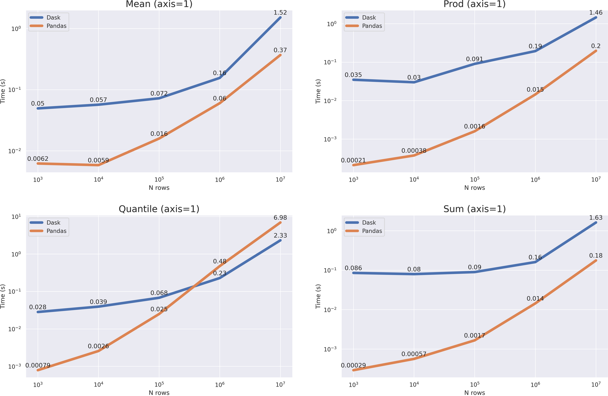

用几行代码显著加快pandas速度的6种方法¶
长期以来，Pandas一直是任何开发人员不可或缺的工具，这要归功于简单易懂的 API，以及一套丰富的数据清洁、研究和分析工具。一切都会很好，但是当涉及到 不适应RAM 或 需要复杂计算的数据时 ，Pandas的表现是不够的。
在本文中，我不会描述数据分析的质不同方法，如 Spark 或数据流。相反，我将描述六种有趣的工具，并演示它们的使用结果：
第一章：¶
- Numba
- Multiprocessing
- Pandarallel
第二章：¶
- Swifter
- Modin
- Dask
Numba¶
此工具直接加速 Python 本身。 Numba 是一个 JIT 编译器 ，像循环、数学操作和 Numpy，这是Pandas的核心库。让我们在实践中检查它提供了哪些优势。
我们将模拟一个典型情况-您需要通过使用该方法将某些功能应用到现有列中来添加一个新列 apply 。
1 2 3 4 5 6 7 8 9 10 11 12 13 14 15 | |
正如您所看到的，您不需要更改代码中的任何东西。只需添加一个装饰器。现在查看结果：
1 2 3 4 5 6 7 8 9 10 11 12 | |
优化版 速度是快~70倍！ 然而，就相对而言，Pandas的实现稍稍落后，因此让我们来考虑一个更复杂的案例。让我们定义新功能：
1 2 3 4 5 6 7 8 9 10 11 12 13 14 15 16 17 18 | |
让我们构建一个图表，显示计算时间对数据框架中行数的依赖性：
小结
Multiprocessing¶
在处理大型数据集时，首先想到的是将所有的计算并行化。这一次我们将不使用任何第三方库--只使用python工具。
我们将使用文本处理作为一个例子。下面我拿的是新闻头条的数据集。像上次一样，我们将尝试加快apply方法。
1 2 3 4 | |
1 2 3 4 5 6 7 8 9 10 | |
并行方式用下面的代码
1 2 3 4 5 6 7 8 9 10 11 12 13 | |
比较速度：
小结:
- 在标准的Python库上工作
- 我们得到了x2-3的速度提升
- 在小数据上使用并行化是个坏主意，因为进程间通信的开销超过了时间上的收益。
Pandarallel¶
Pandarallel是一个小型的pandas库，它增加了使用多核工作的能力。在引擎盖下，它工作在标准的多处理器上，所以你不应该期望与以前的方法相比速度有所提高，但一切都开箱即用+一些糖的形式，即漂亮的进度条。
让我们开始测试吧。进一步说，我将使用与上一部分相同的数据和函数来处理它们。首先设置pandarallel--它非常简单。
1 2 3 | |
现在只剩下写一个优化版的处理程序了，这也很简单--只要用parallel_apply替换apply。
1 | |
小结
- 在大约0.5秒的时间里，一个相当大的开销立刻吸引了你的注意。每次使用时，pandarallel首先创建一个工作池，然后关闭它。在上面的自写版本中，我创建了1次池子，然后重新使用它，所以开销要低得多
- 如果不考虑上述的成本，那么加速效果和前一个版本一样--大约2-3倍
- Pandarallel还知道如何在分组
（groupby）的数据上进行parallel_apply，这相当方便。完整的功能清单和例子。
一般来说，我更喜欢这个选项而不是自写，因为对于中/大数据量来说，速度上几乎没有差别，而且我们得到了一个极其简单的API和进度条。
Swifter¶
Swifter 是另一个小而聪明的pandas wrapper。根据情况，它从可能的优化方法中选择最有效的优化方法——矢量化、并行化或pandas实现。与pandas不同，它使用 Dask 而不是裸机Multiprocessing来组织并行计算，我们稍后将讨论它。
我们相同新闻数据进行两次测试：
- 测试的功能，可以矢量化（矢量化是真的很快）
- 具有无法矢量化的复杂函数的测试。
对于第一个，我使用一个简单的数学操作：
1 2 3 4 5 6 7 | |
为了明确选择哪种方法，我包括pandas处理，矢量方法，以及pandarallel在测试中：
该图清楚地表明， 它与矢量化版本相当 ，这是最有效的（除了一个小的开销，更快地花费在计算最佳方法）。这意味着优化正确进行。
现在让我们看看他将如何应付一个更复杂、更非矢量化的案例。
1 2 3 4 5 6 7 8 9 10 | |
比较速度：

这个案子更有趣。虽然数据量很小（多达100，000行），但更快地使用pandas本身的方法，这是清晰可见的。此外，当pandas不再那么高效时，可以进行并行处理，并且更快地开始处理几个核心，与pandarallel快速对齐。
小结
- Swifter 不仅允许并行，还允许矢量函数
- 自动确定优化计算的最佳策略，使您不必考虑在哪里使用它，在哪里不使用它
- 不幸的是，它尚不能
apply用于分组数据 （groupby）
Modin¶
Modin 是一种并行工具，使用 Dask 或 Ray与以前的项目没有太大区别。然而，这是一个相当强大的工具，我不能称之为只是一个wrapper。Modin 实现了自己的 dataframe 类别（虽然pandas仍在引擎盖下使用），目前已经有大约 80% 的原始功能，其余 20% 指的是pandas实现，从而 完全重复其 API 。
因此，让我们开始配置，为此我们只需要将 env 变量设置为所需的引擎并导入数据帧类：
1 2 3 | |
一个有趣的模数功能是 优化文件读取 。为了测试，创建大小为 1.2 GB 的 csv 文件：
1 2 3 | |
现在用Modin和pandas读入：
1 2 3 4 5 | |
我们有 x3加速 。当然，读取文件不是最常见的操作，但仍然不错。让我们看看Modin如何表现在我们的主文本处理案例：

我们看到， apply 这不是Modin最强的一面，最有可能它会开始受益于更大的数据，但我没有足够的RAM来检查它。然而，Modin武器库并没有就此结束，因此我们将检查其他操作：
1 2 | |

我们看到了什么？非常大的开销。在这种情况下 median nunique ，我们只有当数据帧的大小增长到加速 10 ** 7 ，而在这种情况下 mean prod (axis = 1) ，并没有发生，但从图表可以看出，pandas的计算时间增长更快，与 10 ** 8 Modin的大小已经在所有情况下更加有效。
小结
- Modin 数据框架 API 与pandas相同 ，要调整大数据代码，只需更改一行
- 非常大的开销 ，不应该用于小数据。根据我的计算，在大于1GB的数据上使用它
- 支持大量方法 -目前 超过80% 的方法具有优化版本
- Modin 不仅能够进行并行计算，还可以进行集群 处理 -您可以配置Ray/Dask集群，Modin将连接到它
- 有一 个非常有用的功能 ，允许您 使用磁盘，如果RAM已满
- Ray 和 Dask 都在浏览器中提出了一个非常有用的仪表板。我用Ray：
Dask¶
Dask 是我名单上最后一个也是最强大的工具。它具有大量的功能，值得单独的文章，甚至其中几个。除了与numpy和pandas合作，他还有机器学习模型——dask与 sklearn 和 xgboost 集成，以及许多自己的模型和工具。所有这些 都可以在集群和本地机器上 工作，所有内核都连接在一起。然而，在这篇文章中，我将关注pandas。
配置 dask 所需的全部工作是设置一组workers。
1 2 3 | |
Dask，像Modin一样，使用自己的 dataframe 类，它涵盖 所有的主要功能：
1 | |
现在我们可以开始测试了。让我们比较阅读文件的速度：
1 2 3 | |
Dask在某些地方工作 的速度是前者3倍 。让我们看看它将如何应付我们的主要任务—— apply 加速。相比之下， 我在这里增加了 pandas和Swifter ， 在我看来， 这也做得很好：
1 2 3 | |
我们可以说，dask显示了最好的结果，锻炼速度比任何人从 10 ** 4 线开始。现在让我们看看一些其他有用的功能：
1 2 | |

与Modin一样，我们有一个相当大的开销，但结果相当复杂。对于具有参数的操作， axis = 0 我们没有得到加速，但根据增长率，很明显，与 data size > 10 ** 8 Dask将表现更好。对于操作 axis = 1 ，你甚至可以说，pandas将工作得更快（除了 quantile (axis = 1) 方法）。
尽管大pandas在许多操作中都表现更好，但不要忘记，dask 主要是一种集群解决方案，可以在pandas无法应付的情况下工作（例如，使用不适合 RAM 的大数据）。
小结
- 擅长
apply加速 - 非常大的开销。 旨在操纵不适合内存的大数据集。
- 它可以 在集群中和单台计算机上工作
- Dask API 复制pandas ，但不完全复制，因此仅替换数据帧类来调整 Dask 下的代码可能会失败
- 支持大量方法
- 有用的仪表板

结论¶
应该理解， 并行化并不是解决所有问题的办法，你总是需要从优化代码开始 。在将函数平行或应用像 Dask 这样的集群解决方案之前，请问自己：是否可以应用矢量化？数据存储效率高吗？索引配置正确吗？如果在回答这些问题后，您的意见没有改变，那么您确实需要描述的工具，或者您懒得进行优化。
谢谢你的关注，我希望这些工具派上用场！
信任，但验证-文章中使用的所有代码（基准和图表绘图），我张贴在 github
凡本网注明"来源：XXX "的文/图/视频等稿件，本网转载出于传递更多信息之目的，并不意味着赞同其观点或证实其内容的真实性。如涉及作品内容、版权和其它问题，请与本网联系，我们将在第一时间删除内容！
作者: Magomed Aliev
来源： https://medium.com/swlh/6-ways-to-significantly-speed-up-pandas-with-a-couple-lines-of-code-part-2-7a9e41ba76dc